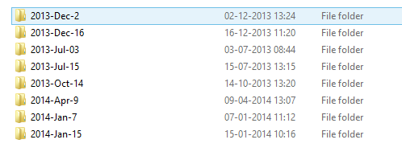
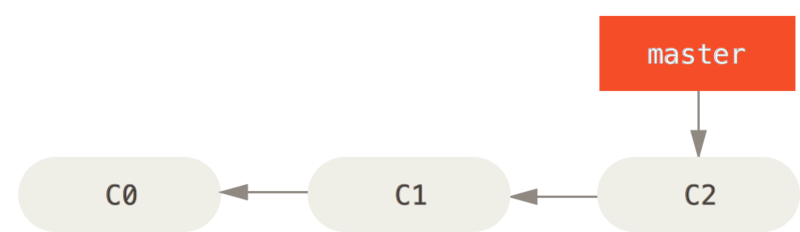

- An Introduction
Agenda
- What is git?
- Getting started
- Git basics
- Git branching, merging & rebasing
- Git workflows
- Demo/Hands-on
(we probably won't have time for this today)
What is git?
Git is a free and open source distributed version control system designed to handle everything from small to very large projects with speed and efficiency.
Why git?
“I'm egotistical, and I name all my projects after myself. First Linux, now git”
- Linus Torvalds
Git [ɡɪt]: British slang for “pig-headed, they are always correct, argumentative”
Part 1
Getting Started
VCS in general
Local Version Control Systems

Can't talk to the network
Or just use folders...

Centralized Version Control Systems

Require network access!
Distributed Version Control Systems

Do not require network access
Git Basics
Start by clearing your mind!
Other systems store data as deltas to a base version of each file.

Snapshots! Not Differences.

Nearly every operation is local
Git has integrity
- Everything is checksummed before storage
-
Git uses SHA-1 hashes to perform the checksum
24b9da6552252987aa493b52f8696cd6d3b00373 -
SHA-1's are used to reference every object in git
> git log commit 82bc0d42140bd857bcee94380d35ba680ac357f3 Author: Jesper Hess Nielsen <jesper@graffen.dk> Date: Tue Apr 1 08:49:33 2014 +0200 Add two missing SIM WebConnect servers
Integrity is important!
It means we can trust Git 100% to deliver the correct bytes to us.
Git generally only adds data
Git is extremely effective on storage
The three main parts of a git repo
- The .git directory
- The working directory
- The staging area or index
Files exist in one of three (four) states
- modified
- staged
- committed
- (untracked)

A basic git workflow

Getting Started
Installing Git
Just grab the official installer

https://git-scm.com/
Initial configuration
Your identity
> git config --global user.name "Jesper Hess Nielsen"
> git config --global user.email "jnc@saxobank.com"
Checking your settings
> git config --list
user.name=Jesper Hess Nielsen
user.email=jnc@saxobank.com
color.status=auto
color.branch=auto
color.interactive=auto
...What's my user.name?
> git config user.name
Jesper Hess Nielsen
You can always get help
> git help <verb>
> git <verb> --help
> git help configPart 2
Git Basics
Initializing a git repository
> git init
Initialized empty Git repository in D:/GitDemos/MyProject/.git/
That's all there is to it.
Cloning a Repository
> git clone https://github.com/madskristensen/MiniBlog
> git clone https://github.com/madskristensen/MiniBlog MyBlog

Kind of like the sheep.
This is how it looks
> git clone https://github.com/madskristensen/MiniBlog
Cloning into 'MiniBlog'...
remote: Reusing existing pack: 2428, done.
remote: Total 2428 (delta 0), reused 0 (delta 0)
Receiving objects: 100% (2428/2428), 8.03 MiB | 14.49 MiB/s, done.
Resolving deltas: 100% (1270/1270), done.
Checking connectivity... done
Protocol support
- Local filesystem (duh!)
- SMB (\\servername\share\repository)
- HTTP(s)
- SSH
- git://
Demo
Part 3
Git Branching
What is a branch?
Nothing more than a 40-character text file inside your repository.
How does branching in git work?
- by moving that pointer around.
What is a commit really?

Add more commits

The master branch

Create a new branch
> git branch testing

The HEAD pointer

Switching branches
> git checkout testing

Let's add a commit
> notepad test.rb
> git commit -a -m "made a change"

Switch back to master
> git checkout master

A few more changes
> notepad test.rb
> git commit -am "Made another change"

All this happens on your local machine!
Branches only appear on the server if you explicitly push them there.
Part 4
Merging
Basic branching
(a quick recap)
Let's work on an issue!
$ git checkout -b iss53
Switched to a new branch "iss53"Disaster strikes!
(not really, we've got a safety net)

Hotfix time!
$ git checkout master
Switched to branch 'master'
$ git checkout -b hotfix
Switched to a new branch 'hotfix'
$ notepad index.html
(... fix problem ...)
$ git commit -a -m 'Fix the broken email address'
[hotfix 1fb7853] fixed the broken email address
1 file changed, 2 insertions(+)Hotfix branch based on master
Merge!
$ git checkout master
$ git merge hotfix
Updating f42c576..3a0874c
Fast-forward
index.html | 2 ++
1 file changed, 2 insertions(+)
The fast-forward merge

Now clean up and switch back
$ git branch -d hotfix
Deleted branch hotfix (3a0874c).
$ git checkout iss53
Switched to branch "iss53"
$ vim index.html
( ... do stuff ...)
$ git commit -a -m 'finish the new footer [issue 53]'
[iss53 ad82d7a] finish the new footer [issue 53]
1 file changed, 1 insertion(+)
Work continues on iss53
Basic Merging
$ git checkout master
Switched to branch 'master'
$ git merge iss53
Merge made by the 'recursive' strategy.
index.html | 1 +
1 file changed, 1 insertion(+)
Snapshots used in a typical merge
The merge commit

Branch management
List branches
$ git branch
iss53
* master
testingList branches
(verbose)
$ git branch -v
iss53 93b412c fix javascript issue
* master 7a98805 Merge branch 'iss53'
testing 782fd34 add scott to the author list in the readmesIs my branch merged?
$ git branch --merged
iss53
* masterLists branches that have been integrated into your current branch.$ git branch --no-merged
testingLists branches that have not yet been integrated into your current branch.Part 5
Rebasing
The basic rebase
Our current status

$ git checkout experiment
$ git rebase master
First, rewinding head to replay your work on top of it...
Applying: added staged command

Now you can just fast-forward master
$ git checkout master
$ git merge experimentSee how neat our history looks now?
A more interesting example

Prepare client-side for release
$ git rebase --onto master server clientFast-forward master
$ git checkout master
$ git merge client
Now to integrate the 'server' branch
$ git rebase master serverClean-up time
First, fast-forward as usual
$ git checkout master
$ git merge serverThen delete your topic branches
$ git branch -d client
$ git branch -d serverFinal commit history
Neat and tidy, right?
The perils of Rebasing
Never rebase commits that exist outside your repo!
An example of rebase hell
You clone a remote repo and do some work on that
Your teammate keeps working and pushing code
He pushes some commits that include a merge
Teammate decides to rebase instead
- and does a git push --force to overwrite history on the server

If you pull now, you're in a pickle

The solution/fix to this problem
git pull --rebase
Rebases your local changes onto remote changes
So instead of this
We get this

Part 6
Git workflows
Centralized Workflow

Integration-Manager Workflow

Dictator and Lieutenants Workflow

Part 5
Git in VS & TFS
Tooling Support
- VS has supported git natively since VS 2012 update 2
- TFS supports git repos on the server since TFS 2013
- TFS supports repo-local pull requests quite well!
- Pretty good integration with work items etc.